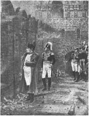
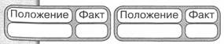
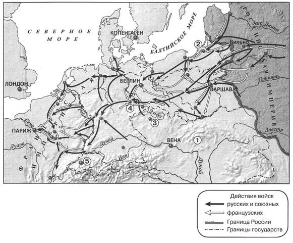
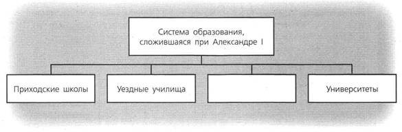
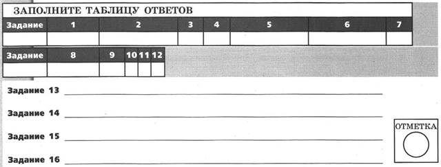
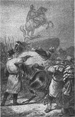
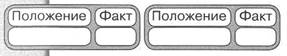
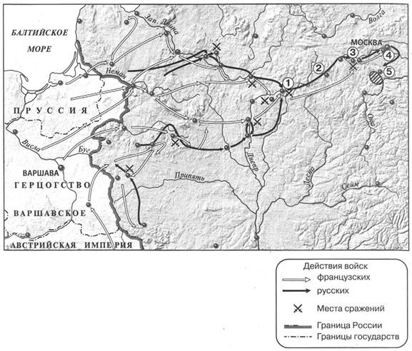
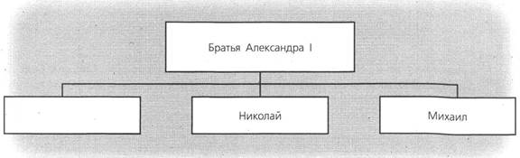
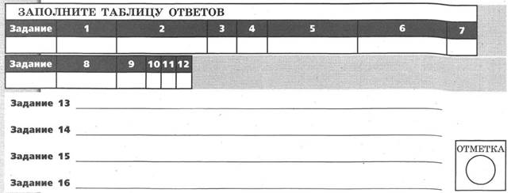

КОНТРОЛЬНАЯ РАБОТА № 1
ВАРИАНТ 1
1. Расположите события в хронологическом порядке.
A) учреждение Государственного совета
Б) создание Северного тайного общества
B) создание Союза благоденствия
Г) начало работы Венского конгресса
Запишите получившуюся последовательность букв.
2. Установите соответствие между событиями и годами.
СОБЫТИЯ
A) заключение Бухарестского мира между Россией и Османской империей
Б) восстание Черниговского полка
B) дарование конституции Царству Польскому
ГОДЫ
1) 1806 г.
2) 1812 г.
3) 1815 г.
4) 1826 г.
Запишите цифры, соответствующие выбранным ответам.
3. Прочитайте отрывок из сочинения историка и выберите два верных суждения.
В последние годы царствования императора Александра I военные поселения получили весьма широкое развитие и заключали в себе целую треть русской армии. Отдельный корпус военных поселений, под начальством графа ____, в конце 1825 г. состоял из 90 батальонов новгородского поселения, 12 батальонов Могилёвского, 36 батальонов и 240 эскадронов слободскоукраинского, екатеринославского и херсонского поселений... Государь, преисполненный человеколюбием, при учреждении военных поселений преимущественно имел в виду, с одной стороны — обеспечить судьбу военного поселения, а с другой — избавить своих подданных от наиболее тяжкой для них повинности — рекрутской. Ошибки — удел человечества, и государь не мог предвидеть последствий своего нового учреждения. Да и что могло остеречь его? Несмотря на общее убеждение в несостоятельности и вреде военных поселений, ближайшее к нему, облечённые его доверием люди наперерыв славили всё виденное ими в красивых селениях, созданных ____ ...
Император Александр, посещая военные поселения, находил на каждом шагу внешние признаки довольства и благосостояния.
1) Фамилия, дважды пропущенная в тексте, — Барклай де Толли.
2) Автор считает, что с помощью создания военных поселений император хотел избавить население от рекрутской повинности.
3) Автор считает, что создание военных поселений принесло только пользу стране.
4) В отрывке указан год смерти Александра I.
5) Автор пишет, что русская армия наполовину состояла из военных поселян.
4. Рассмотрите изображение и укажите два верных суждения.
1) События, изображённые на картине, происходят в осеннее время.
2) Исторический деятель, изображённый на переднем плане, был участником Венского конгресса.
3) События, изображённые на картине, произошли после сражения под Малоярославцем.
4) Исторический деятель, изображённый на картине, носил титул императора французов.
5) Современником событий, изображённых на картине, был Г.А. Потёмкин.

5. На основе данных статистической таблицы завершите представленные ниже суждения, соотнеся их начала и варианты завершения.
Население России в 1796 г. и в 1815 г.
|
Годы |
Всего, млн чел. |
В том числе городское население |
В том числе крепостные |
||
|
млн чел. |
в % ко всему населению |
млн чел. |
в % ко всему населению |
||
|
1796 |
36,0 |
1,3 |
3,6 |
20,0 |
55,5 |
|
1815 |
45,0 |
1,7 |
3,8 |
20,8 |
46,2 |
НАЧАЛО СУЖДЕНИЯ
A) В период 1796-1815 гг. доля городского населения в структуре населения страны
Б) В период 1796-1815 гг. доля крепостных в структуре населения страны
B) В период 1796-1815 гг. примерно на 400 тыс. человек увеличилась численность
ВАРИАНТЫ ЗАВЕРШЕНИЯ СУЖДЕНИЯ
1) сократилась.
2) городского населения.
3) осталась неизменной.
4) крепостных.
5) увеличилась.
Запишите цифры, соответствующие выбранным ответам.
6. Установите соответствие между событиями (процессами, явлениями) и участниками этих событий (процессов, явлений).
СОБЫТИЯ (ПРОЦЕССЫ, ЯВЛЕНИЯ)
A) деятельность Негласного комитета
Б) Бородинское сражение
B) деятельность Союза спасения
УЧАСТНИКИ
1) П.И. Багратион
2) И.И. Пущин
3) П.А. Пален
4) П.А. Строганов
Запишите цифры, соответствующие выбранным ответам.
7. Укажите две причины неудачи выступления декабристов на Сенатской площади.
1) несовпадение реального хода событий с планом восстания
2) отсутствие офицеров в рядах восставших
3) наличие серьёзных разногласий в рядах Южного общества
4) арест диктатора восстания С.П. Трубецкого накануне выступления
5) численное превосходство правительственных войск
8. Перед вами четыре предложения. Два из них являются теоретическими положениями, которые требуется аргументировать. Другие два содержат факты, которые могут послужить аргументами для этих положений.
1) В 1820-х гг. Россия обеспечивала себя ситцевыми тканями и перестала ввозить их из-за границы.
2) В период правления Александра I ускоренно развивается лёгкая промышленность.
3) В 1808-1811 гг. вступили в строй Мариинская и Тихвинская системы каналов, соединившие бассейны рек Волги и Невы.
4) В период правления Александра I правительство заботилось о совершенствовании системы путей сообщения.
Подберите для каждого теоретического положения соответствующий факт. Номера соответствующих предложений запишите в таблицу.

9. Прочитайте текст, в котором предложения пронумерованы. Данный текст содержит две ошибки. Фрагменты текста, в которых, возможно, сделаны ошибки, подчёркнуты и выделены полужирным шрифтом.
(1) В 1801 г. Россия и Англия заключили конвенцию «О взаимной дружбе», направленную против Франции. (2) Вскоре после того как Наполеон Бонапарт провозгласил себя в 1804 г. императором французов, Россия вступила в пятую антифранцузскую коалицию. (3) Её союзниками были Великобритания, Австрия и Швеция. (4) Готовивший высадку десанта в Англии Наполеон внезапно перебросил свои основные силы в Центральную Европу. (5) Здесь французы вначале разгромили австрийские войска в сражении под Ульмом и заняли Вену. (6) Затем под командованием самого Наполеона французские войска нанесли поражение австро-русской армии под Прейсиш-Эйлау (20 ноября 1805 г.). (7) Антифранцузская коалиция распалась.
10. Укажите номера предложений, в которых есть фрагменты, содержащие ошибки.
Ниже приведён перечень терминов (названий). Все они, за исключением одного, относятся к событиям (явлениям, процессам) истории России первой четверти XIX в. Найдите и укажите порядковый номер термина (названия), выпадающего из данного ряда.
1) Союз спасения; 2) верховники; 3) вольные хлебопашцы; 4) барщина; 5) Комитет министров.
Рассмотрите карту и выполните задания 11—13.

11. Укажите год, когда окончились события, обозначенные на карте стрелками.
1) 1812 г.
2) 1813 г.
3) 1814 г.
4) 1815 г.
12. Какой цифрой на карте обозначен город, рядом с которым произошло сражение, вошедшее в историю как Битва народов?
13. Запишите название государства, территория которого обозначена на карте цифрой 1.
Ответ:
Запишите термин, о котором идёт речь.
14. Постоянная работа крепостных крестьян на барской запашке при выплате им помещиком ежемесячного содержания.
Ответ:
15. Прочитайте отрывок из проекта и запишите фамилию автора этого проекта.
Из депутатов волостных дум каждые три года в окружном городе составляется собрание под именем думы окружной. Окружная дума избирает председателя и главного секретаря...
Из депутатов окружных дум составляется в губернском городе каждые три года собрание под именем губернской думы. Губернская дума, собравшись, прежде всего избирает председателя и секретаря...
Из депутатов, представленных от губернской думы, составляется законодательное сословие под именем Государственной думы. Государственная дума есть место, равное Сенату и министерству. Государственная дума собирается по коренному закону и без всякого созыва ежегодно в сентябре месяце. Срок действия её определяется количеством дел, ей предлагаемых.
Ответ:
16. Заполните пропуск в схеме.

Ответ:

ВАРИАНТ 2
1. Расположите события в хронологическом порядке.
A) сражение под Аустерлицем
Б) издание указа о вольных хлебопашцах
B) смерть Александра I
Г) создание Союза спасения
Запишите получившуюся последовательность букв.
2. Установите соответствие между событиями и годами.
СОБЫТИЯ
A) учреждение первых министерств
Б) создание Южного общества
B) смерть М.И. Кутузова
ГОДЫ
1) 1802 г.
2) 1810 г.
3) 1813 г.
4) 1821 г.
Запишите цифры, соответствующие выбранным ответам.
3. Прочитайте отрывок из сочинения историка и выберите два верных суждения.
По очищении России от «великой армии» многие из русских государственных деятелей полагали, что настал благоприятный момент для заключения выгодного мира с Наполеоном, дальнейшее же ведение войны и перенесение её за границу считали для России непосильными. Во главе поборников мира стояли князь Кутузов и канцлер Румянцев. В виде вознаграждения за несметные убытки, понесённые Россией, они предлагали расширение границ её за счёт Пруссии до Вислы. Но император Александр I, сознавая, что Наполеон располагает богатейшими ресурсами для восстановления своего военного могущества, и убеждённый, что всякий мир с таким противником есть не что иное, как более или менее кратковременное перемирие, твёрдо решился не упускать момента для окончательного низложения грозного завоевателя. Быстрым наступлением к Висле и Одеру император Александр вовлёк Пруссию в войну и, заручившись её союзом, поднял против Наполеона остальные германские государства. В то же время начаты были переговоры с австрийским правительством. К концу января ____ года почти вся Польша была очищена от неприятельских войск.
1) Год, пропущенный в данном отрывке, — 1814.
2) Автор считает, что Александр I не верил в возможность заключения долгосрочного мира с Наполеоном.
3) Согласно отрывку, Кутузов и Румянцев считали, что Россия не должна претендовать на территорию Пруссии.
4) Автор выражает категорическое несогласие с позицией Александра I по поводу продолжения войны с Наполеоном.
5) По окончании кампании против Наполеона, о которой идёт речь, был созван Венский конгресс.
4. Рассмотрите изображение и укажите два верных суждения.
1) События, изображённые на картине, произошли, когда императором России был Александр I.
2) На картине изображён М.А. Милорадович.
3) Автор памятника, изображённого на картине, — скульптор Ф.И. Шубин.
4) Современником событий, изображённых на картине, был М.М. Сперанский.
5) Город, в котором произошли события, изображённые на картине, был основан в XIX в.

5. На основе данных статистической таблицы завершите представленные ниже суждения, соотнеся их начала и варианты завершения.
Государственные расходы России в 1803-1814 гг.
|
1803 г. |
1805 г. |
1810 г. |
1814 г. |
|
|
Государственные расходы, млн р. |
109,4 |
125,4 |
279,0 |
457,7 |
|
в том числе на военные нужды, млн р. |
52,7 |
54,2 |
147,5 |
301,0 |
|
доля расходов на военные нужды в % |
43,1 |
45,6 |
52,9 |
65,8 |
НАЧАЛО СУЖДЕНИЯ
A) Расходы на военные нужды увеличились более чем на 100 млн рублей в
Б) Государственные расходы увеличились менее чем на 20 млн рублей в
B) В 1810 г. расходы на военные нужды составляли
ВАРИАНТЫ ЗАВЕРШЕНИЯ СУЖДЕНИЯ
1) 1803-1805 гг.
2) 1805-1810 гг.
3) более половины всех государственных расходов.
4) 1810-1814 гг.
5) менее половины всех государственных расходов. Запишите цифры, соответствующие выбранным ответам.
6. Установите соответствие между событиями (процессами, явлениями) и участниками этих событий (процессов, явлений).
СОБЫТИЯ (ПРОЦЕССЫ, ЯВЛЕНИЯ)
A) составление «Русской Правды»
Б) Тарутинский манёвр
B) составление «Плана государственного преобразования» в первой половине царствования Александра I
УЧАСТНИКИ
1) Г.А. Потёмкин
2) М.М. Сперанский
3) М.И. Кутузов
4) П.И. Пестель
Запишите цифры, соответствующие выбранным ответам.
7. Укажите два последствия создания военных поселений в первой четверти XIX в.
1) расформирование казачьих войск
2) недовольство и массовые протесты поселян
3) снижение расходов государства на содержание армии
4) прекращение рекрутских наборов в армию
5) расширение социальной опоры власти за счёт военных поселян
8. Перед вами четыре предложения. Два из них являются теоретическими положениями, которые требуется аргументировать. Другие два содержат факты, которые могут послужить аргументами для этих положений.
1) Решительные шаги по решению крестьянского вопроса Александр I предпринял в западных губерниях страны.
2) Александр I избегал решительных действий в крестьянском вопросе.
3) Проект А.А. Аракчеева, предполагавший постепенное освобождение крепостных крестьян с землёй, не был осуществлён.
4) В 1816 г. Александр I утвердил закон о полной отмене крепостного права в Эстляндии при сохранении земель за помещиками.
Подберите для каждого теоретического положения соответствующий факт. Номера соответствующих предложений запишите в таблицу.

9. Прочитайте текст, в котором предложения пронумерованы. Данный текст содержит две ошибки. Фрагменты текста, в которых, возможно, сделаны ошибки, подчёркнуты и выделены полужирным шрифтом.
(1) В сентябре 1802 г. началась реформа высших органов государственной власти. (2) Сенат был превращён в высший судебный орган. (3) Его задачей стал также контроль за деятельностью местных властей. (4) Одновременно главными органами государственного управления вместо приказов стали 8 министерств: военное, морское, иностранных дел, юстиции, внутренних дел, финансов, народного просвещения, коммерции. (5) Для обсуждения общих вопросов управления страной был учреждён Комитет министров. (6) Все члены Избранной рады вошли в состав правительства. (7) В.П. Кочубей стал министром внутренних дел, а П.А. Строганов — его заместителем; заместителем министра юстиции был назначен Н.Н. Новосильцев, А.А. Чарторыйский стал фактически министром иностранных дел.
Укажите номера предложений, в которых есть фрагменты, содержащие ошибки.
10. Ниже приведён перечень терминов (названий). Все они, за исключением одного, относятся к событиям (явлениям, процессам) истории России первой четверти XIX в. Найдите и запишите порядковый номер термина (названия), выпадающего из данного ряда.
1) Негласный комитет; 2) крепостное право; 3) Общество соединённых славян; 4) патриарх; 5) месячина.
Рассмотрите карту и выполните задания 11—13.

11. Укажите месяц, когда начались события, обозначенные на карте стрелками.
1) январь
2) июнь
3) сентябрь
4) декабрь
12. Укажите цифру, которой на карте обозначено село Тарутино.
13. Запишите название города, обозначенного на карте цифрой 1.
Ответ:
14. Запишите термин, о котором идёт речь.
Система экономических и политических мероприятий, проводившаяся в 1806-1814 гг. Наполеоном по отношению к своему противнику — Великобритании, включавшая запрет на торговлю с ней.
Ответ:
15. Прочитайте отрывок из программного документа и запишите фамилию автора этого документа.
Ежели император по прошествии 10 дней (исключая воскресных) не возвратит представленного ему проекта, то оный получает силу закона. Если же Народное вече отсрочит между тем свои заседания, то предложение не становится законом. Всякое приказание, решение или прокламация и манифест, требующие содействия обеих палат, должны быть представлены императору и утверждены им, чтобы быть приведёнными в исполнение...
Ответ:
16. Заполните пропуск в схеме.

Ответ:

КОНТРОЛЬНАЯ РАБОТА № 2
ВАРИАНТ 1
1. 25 июня два императора встретились на плоту на реке Неман. Через несколько дней был подписан мирный договор между Россией и Францией.
Укажите название этого мирного договора. Укажите причину, по которой Россия вынуждена была пойти на заключение этого договора. Укажите одно любое последствие заключения этого договора для России.
2. Существует точка зрения, что конституционный проект П.И. Пестеля был радикальнее (более решительно выступал за изменение старых порядков), чем конституционный проект Н.М. Муравьёва.
Приведите два аргумента в подтверждение этого положения.
3. Прочитайте отрывок из сочинения историка и выполните задания.
На поместное дворянство члены комитета смотрели неблагосклонно. Оставлять за помещиками право на личность и труд крестьян казалось несправедливым. Но как отменить это право, комитет не додумался, и император Александр ограничился в области положительных мероприятий указом о вольных хлебопашцах. Мысль, лёгшая в основание указа, была подана государю не в комитете, но она вполне соответствовала настроению комитета и самого Александра. Помещикам предоставлялось право освобождать своих крепостных на условиях, выработанных по их взаимному соглашению и утверждённых правительством; освобождённые крестьяне составляли особое состояние вольных хлебопашцев. Указ остался почти без применения, но послужил для общества достоверным признаком, по которому можно было заключить о направлении правительства в крестьянском вопросе. Если правительство не пошло здесь далее частной меры, то причина этого не в его настроении, а в трудности дела.
Укажите название комитета, упомянутого в отрывке. Укажите год, когда был издан указ, о котором идёт речь.
В чём, по мнению автора, состояло значение указа, о котором идёт речь в отрывке? Почему, по мнению автора, правительство не пошло дальше в деле решения крестьянского вопроса?
Укажите не менее двух не указанных в данном отрывке мер, принятых в период правления Александра I, которые изменили положение крестьян.
4. Сравните систему высших органов государственной власти в России при вступлении Александра I на престол и в конце его правления. Самостоятельно сформулируйте линии (критерии) сравнения.
Приведите две общие характеристики и два различия. Заполните таблицы.
Общее
|
Линии (критерии) сравнения |
Система высших органов государственной власти в России при вступлении Александра I на престол и в конце его правления |
Различия
|
Линии (критерии) сравнения |
Система высших органов государственной власти в России при вступлении Александра I на престол |
Система высших органов государственной власти в России в конце правления Александра I |
ВАРИАНТ 2
1. В начале правления Александра I при императоре сформировался неофициальный совещательный орган, который готовил проведение преобразований. Укажите название этого органа. Укажите одну любую реформу в сфере государственного управления, подготовленную этим органом. Почему управление государством в результате этой реформы стало более эффективным?
2. Существует точка зрения, что попытки решения крестьянского вопроса, предпринятые в правление Александра I, оказались неудачными.
Приведите не менее двух аргументов, подтверждающих данную точку зрения.
3. Прочитайте отрывок из сочинения историка и выполните задания.
Самым трудным для решения вопросом явился здесь вопрос о судьбе герцогства Варшавского и Саксонии. Император Александр требовал всех польских земель, желая дать Польше особое устройство под своею верховною властью; король прусский требовал себе Саксонию, король которой считался лишённым своих прав за союз с Наполеоном. Австрия, Англия и Франция никак не соглашались на эти требования и составили тайный союз против России и Пруссии. Дело, однако, уладилось тем, что император Александр согласился взять только часть Варшавского герцогства... и Пруссия удовольствовалась также частью Саксонии.
Между тем, узнавши о сильном неудовольствии во Франции новым правительством, Наполеон тайно оставил Эльбу, высадился в Южной Франции и быстро прошёл до Парижа, не встречая нигде сопротивления; Людовик XVIII должен был бежать из столицы в Бельгию, и Наполеон снова был провозглашён императором.
Укажите название общеевропейской конференции, о которой идёт речь в отрывке. Укажите годы, когда она проходила.
Почему, по мнению автора, вопрос о судьбе герцогства Варшавского и Саксонии оказался самым трудным для решения? Каким обстоятельством, по мнению автора, воспользовался Наполеон для захвата власти во Франции?
Укажите два любых не указанных в данном отрывке результата (последствия) общеевропейской конференции, о которой идёт речь.
4. Сравните положение государственных крестьян и военных поселян при Александре I. Самостоятельно сформулируйте линии (критерии) сравнения. Приведите две общие характеристики и два различия. Заполните таблицы.
Общее
|
Линии (критерии) сравнения |
Положение государственных крестьян и военных поселян |
Различия
|
Линии (критерии) сравнения |
Положение государственных крестьян |
Положение военных поселян |